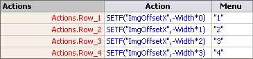

Растровые мультифигуры в Visio.
 Помимо векторных мультифигур, т.е. фигур содержащих несколько фигур одновременно, манипуляции с содержанием возможны и с растровыми изображениями. Но создание и работа с такой фигурой несколько отличается от того, как это делается с векторными мультифигурами.
Помимо векторных мультифигур, т.е. фигур содержащих несколько фигур одновременно, манипуляции с содержанием возможны и с растровыми изображениями. Но создание и работа с такой фигурой несколько отличается от того, как это делается с векторными мультифигурами.
Вообще, зачем нужны мультифигуры? Они представляют собой ходячую папку с объектами, можно их еще сравнить с трафаретом, который содержит фигуры по одной теме и одного размера, что в принципе, недалеко от истины.
Растровые мультифигуры представляют собой большое изображение, но пользователь видит только небольшую часть этого изображения, а остальная часть изображения обрезается, т.е. примерно тоже самое.
Какую именно часть изображения в данный момент отображать, отвечают ячейки ImgOffsetX и ImgOffsetY раздела Информация об изображении (Foreign Image Info).
Создадим графический элемент. Для этого нарисуем несколько квадратов рядом и внутри напишем номера.

Теперь делаем из фигур группу, копируем в буфер и вставляем специальной вставкой как точечное аппаратно-независимое изображение.

Затем надо уменьшить ширину изображения в то количество раз, из какого количества элементов оно состоит. Данная фигура состоит из 4-х элементов, поэтому в формулу окна Позиция и размер вводим значение ширины делить на 4.
Само изображение теперь сузилось. Надо указать программе, что реальная длина изображения намного больше отображаемой области.

Для этого открываем ТаблицуФигур(ShapeSheet) и в разделе Информация об изображении (Foreign Image Info) в ячейку ImgWidth вводим =Width*4, изображение после этого стало нормальным.

Далее можно любым из удобных способов сделать инструмент смены изображения для фигуры, будь то ячейки пользователя, другие ячейки или меню для выбора изображения. Рассмотрим последний, как самый наглядный.
Для этого создаем раздел Действия(Actions) и вводим соответствующие формулы.
Для Visio 2000, 2002.

Ячейки столбца Menu по отображаемой цифре.
В ячейку Actions.Row_1
Для Visio 2000, Visio 2002
Значение =SETF("ImgOffsetX";-Width*0)
Для Visio 2003

Для Visio 2003
Значение =SETF("ImgOffsetX",-Width*0)
В ячейку Actions.Row_2
Для Visio 2000, Visio 2002
Значение =SETF("ImgOffsetX";-Width*1)
Для Visio 2003
Значение =SETF("ImgOffsetX",-Width*1)
В ячейку Actions.Row_3
Для Visio 2000, Visio 2002
Значение =SETF("ImgOffsetX";-Width*2)
Для Visio 2003
Значение =SETF("ImgOffsetX",-Width*2)
В ячейку Actions.Row_4
Для Visio 2000, Visio 2002
Значение =SETF("ImgOffsetX";-Width*3)
Для Visio 2003
Значение =SETF("ImgOffsetX",-Width*3)
Т.е. собственно мы указываем формулой относительное смещение отображаемого изображения от начала координат самой фигуры.
Вот и все. Теперь меняя пункты меню, будут отображаться соответствующие изображения.
Примеры из статьи.
В начало раздела
Предыдущая статья
Следующая статья
Автор: Ничков Алексей (Digitall)